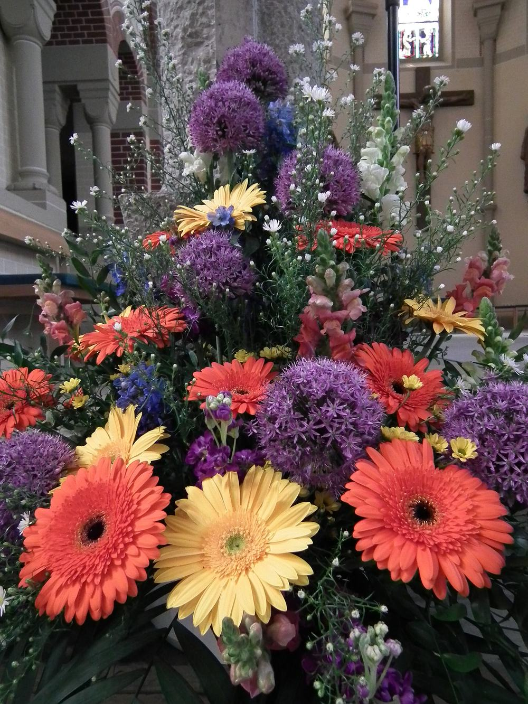
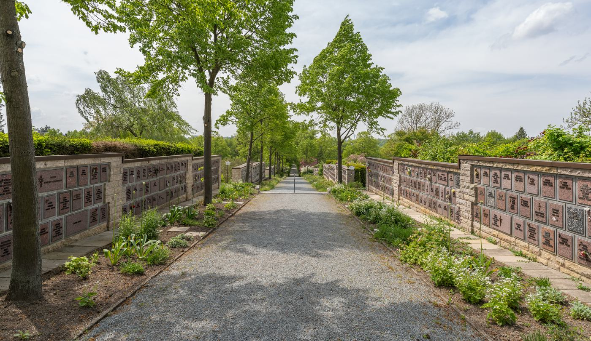

Trauerfeier & BlumenschmuckDekoration, Kränze, Gestecke, Feierhalle, Sargträger
Tag und Nacht erreichbar, auch sonn- und feiertags
Ihr Bestatter in Gattendorf und Hof. Wir begleiten Sie persönlich, würdevoll und bezahlbar und erledigen alle Formalitäten für Sie.
Im Trauerfall
Nur zwei Dinge sind sofort wichtig. Alles andere übernehmen wir. Wo ist der Todesfall eingetreten?
Den Hausarzt oder den Bereitschaftsdienst 116 117 anrufen. Er stellt die Todesbescheinigung aus.
Die Todesbescheinigung stellt das Haus automatisch aus. Sie müssen nichts tun.
Rund um die Uhr. Wir kommen zu Ihnen und besprechen alles Weitere in Ruhe.
0173 102 83 68Standesamt, Friedhof, Kirche, Überführung, Trauerfeier: Wir kümmern uns.
36 Stunden
So lange dürfen Sie den Verstorbenen zu Hause behalten, um in Ruhe Abschied zu nehmen.
Abschied zu Hause
Auch nach einem Tod im Krankenhaus oder Heim kann der Verstorbene noch einmal nach Hause gebracht werden.
Nicht vergessen
Dokumenten-Check
Wählen Sie den Familienstand, und Sie sehen genau, was das Standesamt verlangt.
0 Dokumente
Fehlt etwas? Wir besorgen es für Sie.
Leistungen
Kein anonymes Institut, sondern ein Mensch, der Sie zwischen Tod und Beisetzung begleitet, bei uns oder bei Ihnen zu Hause.

Unverbindlich und persönlich, in allen Bestattungsfragen, vor und nach der Bestattung.
Vom Sterbeort zum Friedhof oder Krematorium, auf Wunsch auch ins Ausland.
Sterbeurkunden, Rente, Krankenkasse, Versicherungen, Kündigungen, Traueranzeigen.
Hygienische Versorgung, Ankleiden, auf Wunsch kosmetische und thanatopraktische Behandlung.
Auch nach der Beisetzung sind wir mit Gesprächen und Zeit für Sie da.
Die eigene Bestattung zu Lebzeiten regeln und die Familie entlasten.
Mehr zur Vorsorge →Bestattungsarten
Wählen Sie eine Bestattungsart, um alles Wichtige dazu zu lesen.
 ErdbestattungBeisetzung im Sarg, die traditionelle FormMehr erfahren ↓
ErdbestattungBeisetzung im Sarg, die traditionelle FormMehr erfahren ↓

FeuerbestattungUrne im Grab, Kolumbarium oder anonymMehr erfahren ↓ SeebestattungBeisetzung in Nord- oder OstseeMehr erfahren ↓
SeebestattungBeisetzung in Nord- oder OstseeMehr erfahren ↓
01 · Erdbestattung
Der Sarg wird auf einem Friedhof beigesetzt, meist am letzten Wohnort oder bei den Angehörigen. Rund 60 % aller Beisetzungen in Deutschland.
02 · Feuerbestattung
Nach der Einäscherung, zum Beispiel im Krematorium Hof, wird die Urne in einem Urnengrab, einem Kolumbarium oder anonym beigesetzt. Sie ist auch Voraussetzung für die Seebestattung.
03 · Seebestattung
Nach der Trauerfeier am Heimatort wird die Asche in einer wasserlöslichen Seeurne nach seemännischem Brauch in Nord- oder Ostsee beigesetzt. Angehörige können an Bord dabei sein.
Kosten
Eine einfache Beerdigung kostet in Deutschland im Schnitt knapp 7.000 €, ohne Grabstein und Grabpflege. Unser Anspruch ist, jedem eine würdevolle Bestattung zu ermöglichen, die bezahlbar bleibt. Sie erhalten vorab einen klaren Kostenvoranschlag.
Kostenvoranschlag anfordernKosten einer Bestattung in Deutschland
Vorsorge
Mit einem Vorsorgeauftrag legen Sie Ihre Wünsche fest und entlasten Ihre Familie. Dazu gibt es einen Kostenvoranschlag auf heutiger Preisbasis.
Vertrauliches Gespräch vereinbaren
Über uns
„Und doch ist Einer, welcher dieses Fallen unendlich sanft in seinen Händen hält.“
Rainer Maria Rilke
Getreu diesem Gedanken begleiten wir Familien in Gattendorf, Hof und Umgebung. Aus jahrelanger Erfahrung beraten wir in allen Fragen, von der Vorsorge bis zur Traueranzeige, und stimmen alle Termine mit Kirche und Friedhof ab.
„Wir möchten jedem eine würdevolle, aber dennoch bezahlbare Bestattung ermöglichen.“
Kontakt
Beim Laden der Karte werden Daten an Google übertragen.